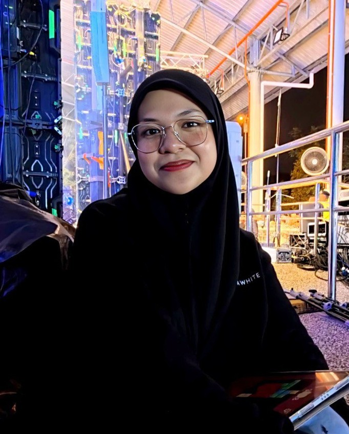

Our Story
What We Are
Green computing means using computers, digital devices, and technology in a way that is friendly to the environment. It is also called sustainable computing, and it focuses on saving energy, reducing pollution, and protecting natural resources. This concept encourages the use of hardware and software that need less electricity, produce less carbon emissions, and work efficiently without wasting resources. Ultimately, green computing aims to ensure that technological progress continues without causing harm to the environment or the planet.
Our Mission
Educate users about green computing, promote eco-friendly technology practices, and inspire a sustainable future for our planet.
Our Vision
To create a future where technology and sustainability work together to build a cleaner, smarter, and environmentally responsible world.
Our Core Values
Sustainability First
We consider the environment in every decision and solution we create.
Evidence-Based
Our ideas are supported by research, data, and proven practices.
Collaboration
We work together with communities and industries to create real impact.
Education
Sharing knowledge helps build awareness and long-term environmental change.
Innovation
We explore new and creative ideas to support sustainable technology.
Transparency
We believe in honesty, openness, and responsibility in everything we do.
Main Goals
Reduce Energy Consumption
Computers, laptops, servers, and data centers use a large amount of electricity. High energy usage increases carbon emissions and contributes to climate change.
Lower Carbon Emissions
By working with organizations to apply green computing practices, we can reduce environmental impact while maintaining efficiency.
Everyday activities like streaming videos, gaming, and browsing the internet require data centers to use massive amounts of electricity, which adds to global warming.
Minimize Electronic Waste
Millions of electronic devices such as phones, laptops, and printers are thrown away each year. These devices contain harmful materials that can pollute the soil and water.
About Me

Aisyah Rusli
Email: aisyahruslee44@gmail.com
Phone: +60 11-65684644
Role: Green Computing Website Creator
About: Passionate about sustainable technology and environmental conservation. Dedicated to promoting green computing practices and educating communities about eco-friendly digital solutions.